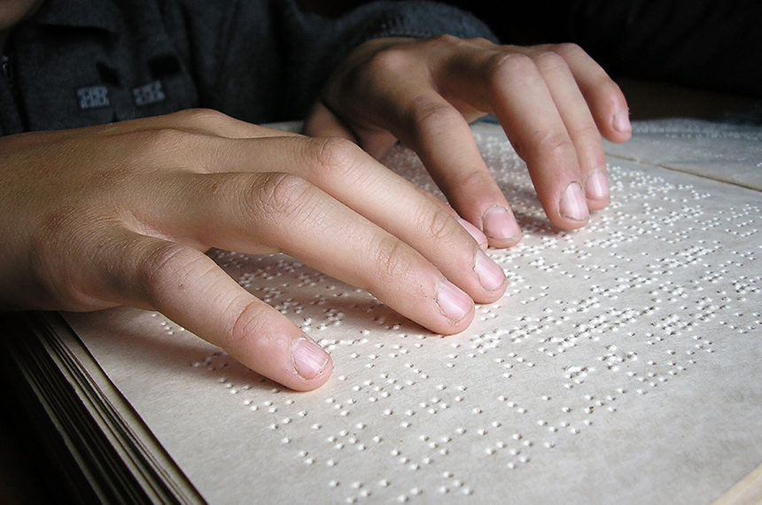

A comunicação eh um aspecto muito importante em nossas vidas, sendo o que nos permite viver em sociedade e fazendo parte do cotidiano de todas as pessoas no mundo. Existem diversas formas de comunicação e muitas delas foram criadas recentemente, facilitando muito a vida de pessoas que apresentam deficiencias nas quais a comunicação via fala, escuta ou leitura se tornam impossibilitadas.
Diferentes formas nas quais a comunicação pode se tornar mais acessivel:

Uma das maneiras na qual a comunicação se tornou mais difundida e acessivel foi por meio do Braile, no qual deficientes visuais podem sentir as diferentes formas e formular letras/palavras.Outra maneira, eh a implementacao das linguagens de sinais, a linguagem de sinais brasileira se chama Libras. Essa linguagem auxilia pessoas que apresentam deficiencias auditivas.A ultima maneira que iremos lista, eh o uso de figuras em sala de aula. Assim auxiliando pessoas com necessidades neurologicas ou pouca visao.